Shopify × Dreamlove Setup Manual
Step-by-step detailed guide
Index
-
Create account & choose a plan
Sign up at shopify.com. After the trial period, you must choose a plan (Basic, Shopify, Advanced or Plus) from Settings → Plan. Check current pricing on the Shopify page in the Prices section.
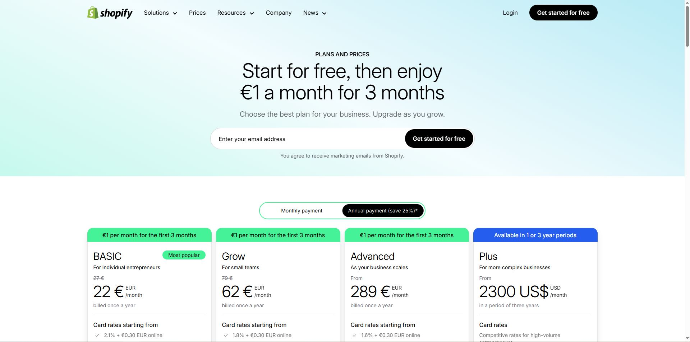
Plan selection in Shopify. -
Store details
In Settings → Store details/Information review and complete:
- Store name and contact details (account email, phone, and business address).
- Store defaults: time zone, base currency, currency format, unit system, and weight unit.
- Order ID format (prefix/suffix if you use them).
- Sender email (from Settings → Notifications): set it up and authenticate your domain (SPF/DKIM/DMARC) so order emails are delivered correctly.
- Admin language and regional format (affects numbers, date and time in the admin).
- Currency customers see and, if you sell to multiple countries, enable local currencies in Settings → Markets.
We recommend keeping the European currency (EUR) as default, which will be used to import the catalog. Later, you can add additional markets and enable local currencies from Settings → Markets.
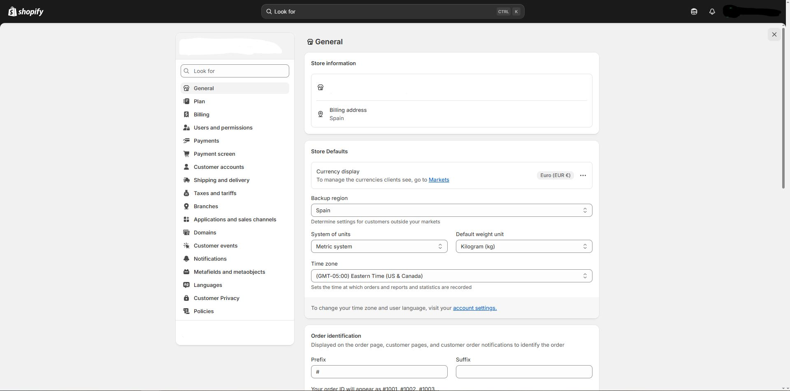
Settings → General -
Plan (Settings → Plan)
After signing up and finishing the trial, choose a plan (Basic, Shopify, Advanced or Plus) from Settings → Plan. You can change plans at any time. See current prices and conditions on Shopify’s official page. See pricing. Change plan.
- Choose plan & billing cycle: monthly or yearly. Monthly plans give you flexibility; yearly plans often have a discount. More information.
- Payment method & billing: add your payment method and review the billing cycle and possible billing thresholds (when invoices are generated). Cycles & thresholds.
- Plan changes: when upgrading or downgrading, Shopify applies proration/adjustments on the next invoice. Review implications before confirming. Plan changes & billing.
- Payment fees: if you use Shopify Payments, card rates depend on your plan and there are no third-party transaction fees for orders processed with Shopify Payments. Shopify Payments cost · Fees & costs.
- Pause or deactivate store: if you need a break, consider the pause plan; you can also deactivate the store from the admin. Pause or deactivate.
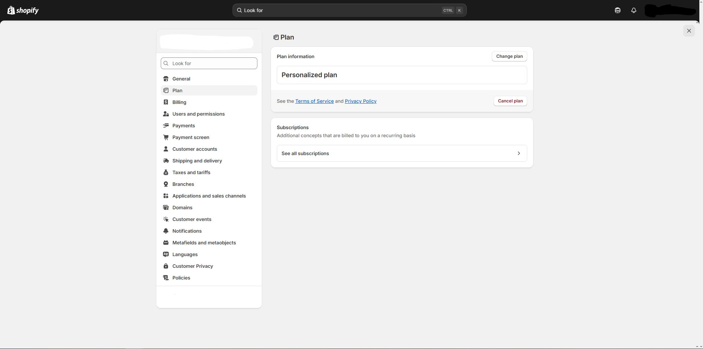
Plan selection in Shopify (Settings → Plan). -
Billing (Settings → Billing)
In Settings → Billing you can manage your billing information and payment method, see upcoming and past invoices, and review the types of charges (subscription, apps, shipping labels, taxes, etc.). From here you can also pay in your local currency when available. Manage billing.
Types of charges on your invoices
- Plan subscription (Basic/Shopify/Advanced/Plus).
- App charges (30-day cycle, independent of the plan).
- Other charges: shipping labels, commissions, taxes and applicable fees.
Billing cycles & thresholds
- Subscription plan: 30-day or annual cycle.
- Apps: 30-day cycle per app.
- Issuance time zone: UTC.
- Billing threshold: if accumulated charges exceed the threshold, Shopify issues an invoice before the end of the cycle (useful for shipping labels, apps, etc.).
Payment methods & billing info
- Update payment method (card), add a backup method, and change billing address.
- ACH/bank (U.S.): you can add and verify a bank account if applicable.
- Local currency: when available, you can pay invoices in your local currency.
View & export invoices (PDF/CSV)
From the billing page you can see the breakdown (subscription, apps, other charges and taxes) and export the invoice in PDF or CSV for accounting.
Taxes on invoices (VAT/EU & UK)
If you operate in the EU or UK, Shopify provides tools to generate VAT invoices and meet billing requirements (including viewing/downloading from the order confirmation). Also review Shopify Tax for VAT ID validation and reverse charge when applicable.
Plan changes & proration
If you change plan (up or down), Shopify may apply adjustments/proration on the next invoice. Review implications before confirming the change.
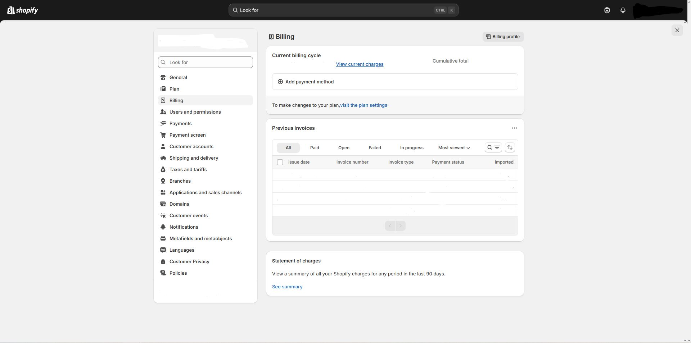
Settings → Billing: payment methods, invoices and export. -
Users & permissions (Settings → Users)
From Settings → Users you can invite users (staff) to your store or organization, assign roles, and limit access with granular permissions. This is the recommended way to provide secure access to your team. Manage users.
1) Invite users
- Go to Settings → Users and click Invite user.
- Enter name and email, and assign one or more roles (see below).
- Review the permissions that will be enabled and send the invitation.
2) Roles & permissions
- A role groups permissions by category (store, organization, POS). You can assign multiple roles to the same user; permissions are cumulative. Roles · Role categories.
- Permissions determine what the user can view/edit/delete (products, orders, settings, apps…). Permissions · Store permissions.
- (Older stores) If you see “Users and permissions” legacy, check the full permissions table by area. Permissions (legacy model) · Descriptions.
- (POS) Employee management and POS roles. Role/permission requirements.
3) Security: Two-step authentication (2FA)
- Recommended for all users; in Plus it can be enforced for the entire organization (Users → Security). 2FA for users · Enforce 2FA (Plus).
- How to enable with an authenticator app (QR) step by step. Authenticator guide.
4) Collaborators (agencies/partners)
If you need an agency to work on your store, use a collaborator account (doesn’t take a staff seat) and control access by permissions. The partner will send a request that you can approve from your admin. Request access (Partners) · Collaborator docs.
5) Transfer ownership
Only the store owner can transfer ownership to another user from Settings → Users. If you work with an organization (Plus), there is also organization ownership transfer. Change/transfer store ownership · Organization ownership.
6) Audit & activity
- Recent access and login history by user (IP, location, browser). User activity.
- Store activity log (recent changes by users/apps/channels). Activity logs.
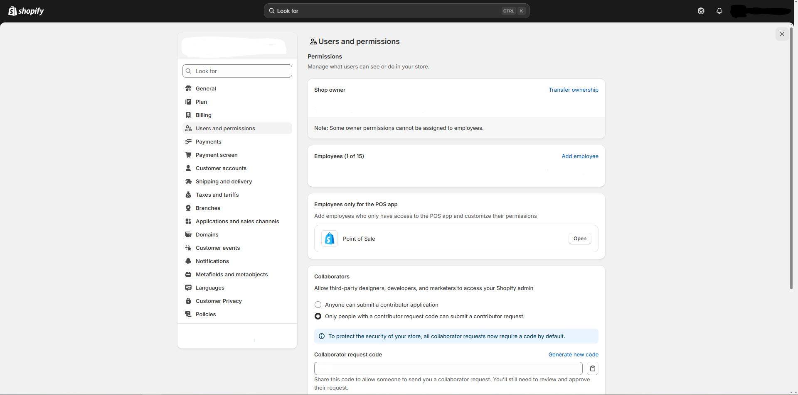
Settings → Users & permissions: invitations, roles, 2FA and auditing. -
Payments (Settings → Payments)
From Settings → Payments you define how your customers pay: Shopify Payments (where available), third-party providers (gateways) and manual methods (bank transfer, cash on delivery, etc.). Shopify Payments (overview).
1) Shopify Payments (recommended when available)
- Activation: click Activate Shopify Payments and complete KYC verification (business, owner and bank account details). Shopify requires 2FA to receive payouts. Set up/activate account.
- Configuration: currencies, countries, fraud prevention and accelerated checkouts (Shop Pay, Apple Pay, Google Pay) from the same screen. Shopify Payments settings · Payments & accelerated buttons.
- Test mode: lets you simulate charges in a safe environment (don’t use in production). Test mode.
2) Third-party payment providers (card & local)
- If Shopify Payments isn’t available or you prefer another gateway, choose from 100+ gateways on this page. Configure a third-party provider · List by country.
- PayPal: connect your account (section “Additional payment methods → PayPal”). Set up PayPal.
3) Manual payment methods (bank transfer, COD)
Create custom methods (e.g., Bank transfer or Cash on delivery). You must mark the order as paid when you receive the amount. Manual payments.
4) Authorization & capture
Define whether capture is automatic (charge immediately) or manual (remains “Authorized” until you capture). Useful if you verify stock or fraud before charging. Capture payments.
5) Payouts, refunds & adjustments
- Refunds: issue them from the order; the amount is deducted from the next payout (may create a negative balance). Refunds in Shopify Payments.
- Lower or missing payouts: check statuses, timelines and common causes. Lower/missing payouts.
6) International & local methods
If you sell to multiple countries, in Markets you’ll see eligible local payment methods per market and a direct link to enable them here. Payments by markets.
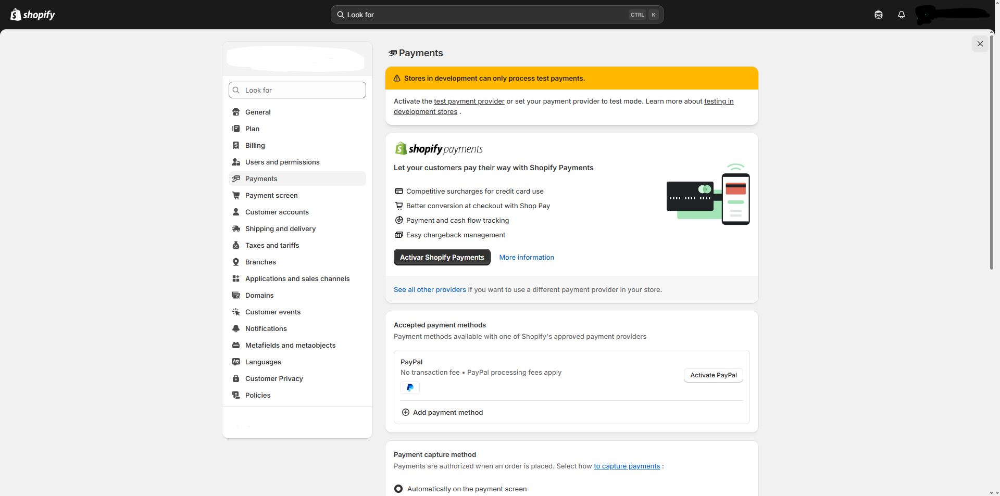
Settings → Payments: activate Shopify Payments, third-party providers and manual methods. -
Checkout (Settings → Checkout)
From Settings → Checkout you define the checkout experience: customer accounts, contact method, required/optional fields, tips, copy, and visual customization. Official checkout guide.
1) Customer accounts & contact method
- Customer accounts: allow guest checkout, optional, or required. Adjust the “Account experience” to decide if customers must sign in or can check out as guests.
- Contact method: choose whether you request email, phone, or both, and whether you include the marketing consent checkbox.
2) Checkout form fields
You can set fields as required, optional, or hidden (e.g., second last name, company, or phone) to simplify the process and improve conversion. Edit form options.
3) Tips
Enable tips at checkout and customize texts from the theme’s default content (section “Checkout & system”). Set up tips.
4) Appearance & customization
- Checkout & Accounts editor: customize checkout style (logo, colors, typography) and structure with the editor. In standard plans you have the editor and apps for “Thank you”/“Order status”; in Shopify Plus it extends to Information, Shipping, and Payment pages, plus the Checkout Branding API.
• Customize checkout with the editor · Branding editor (Plus) · Checkout Branding API (Plus). - Visible payment methods: hide/order/rename methods with compatible apps if you need to prioritize certain options. Customize payment options.
5) Checkout language & copy
Change checkout copy from Settings → Checkout → Checkout language (Manage). To translate the rest of the store use “Translate & Adapt” or the theme translation. Translate checkout · Translate theme.
6) Abandoned checkout recovery
Create an automation in Marketing → Automations to send abandoned cart/checkout emails with a return link; you can include discounts to encourage completion. Abandoned checkout automation · Report & effectiveness · Automatic discount in emails.
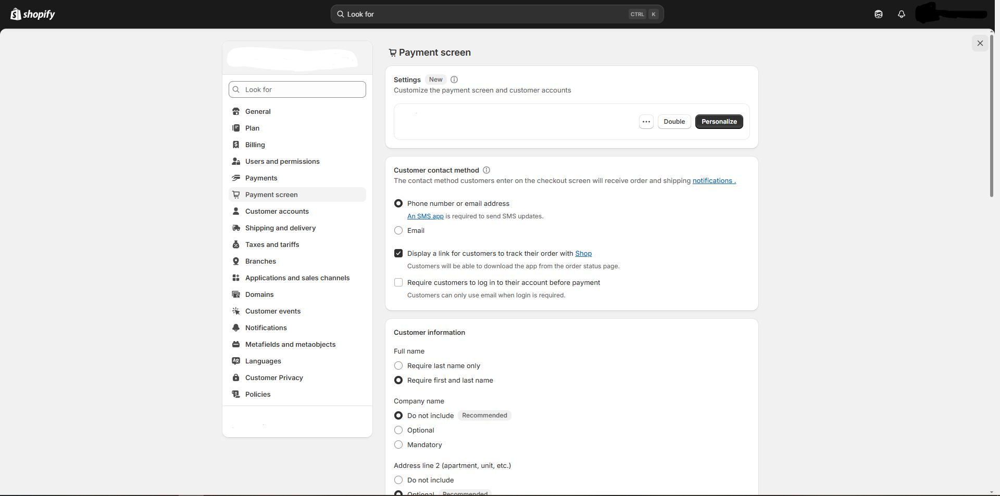
Settings → Checkout: accounts, fields, tips, style and automations. -
Customer accounts (Settings → Customer accounts)
Accounts let your customers sign in to view orders, manage addresses and speed up checkout (autofill). Shopify offers two experiences: “Customer accounts” (new) and “Legacy accounts”. In the new experience, access is passwordless via a 6-digit code sent by email, and customers can also sign in with Shop (Shop Pay). Overview · New customer accounts.
1) Choose account type & enable
- Go to Settings → Customer accounts and select Customer accounts (new) or Legacy (old). The new ones use email code (passwordless) and are the recommended experience going forward.
- Enable showing the “Sign in” link in your store and checkout if you want to offer optional access.
2) Required or optional at checkout?
If you want to require sign-in before paying, go to Settings → Checkout and activate the corresponding option (require account before payment). If you prefer less friction, keep them optional to allow guest checkout.
3) Sign in with Shop & Shop Pay
- With the new accounts, if you offer Shop Pay, the Sign in with Shop button is enabled automatically; saved data speeds up one-tap payment.
4) Customize the account page
Customize the look of checkout & accounts (logo, colors, blocks/apps) with the Checkout & Accounts editor.
5) Recovery/support
- Legacy: if you use legacy accounts, customers can reset passwords; also review your email templates in Settings → Notifications.
- New accounts: access is via one-time code sent by email (no password to reset).
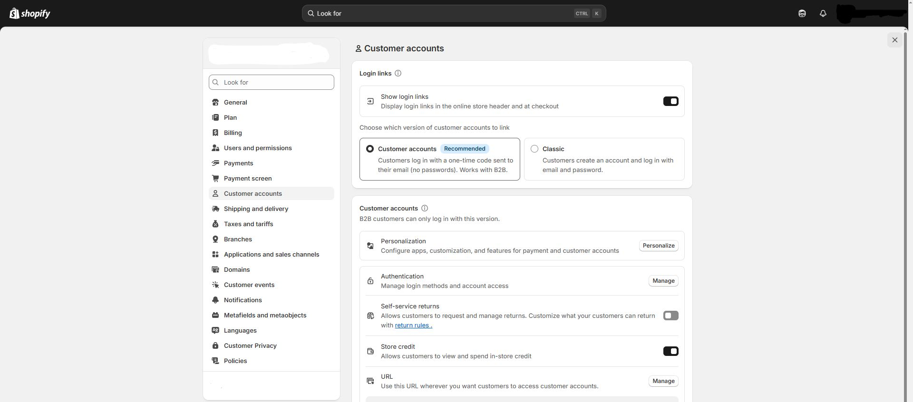
Settings → Customer accounts: enablement, checkout options and account page customization. -
Shipping & delivery (Settings → Shipping and delivery)
From Settings → Shipping and delivery you define shipping profiles, zones and rates; you also set up packages, local pickup and local delivery. This is the central place so your customers see correct options and costs at checkout. How shipping works in Shopify.
1) Shipping profiles
- Use the General profile for most products, or create custom profiles (e.g., bulky/fragile items with different rates).
- In each profile, define zones and rates per location that fulfills orders.
2) Shipping zones & Shopify Markets
- Create zones (groups of countries/regions) and assign rates. A country/region can only belong to one zone per group of locations.
- To add a country to a zone, it must be in an active Market (Markets).
3) Shipping rates (what you can offer)
- Flat rate (single or tiered), free (e.g., above a certain amount), or conditional by price/weight.
- Carrier-calculated rates (CCS): show real-time cost from your UPS/FedEx/DHL account, etc. Requires enabling CCS and connecting the carrier account.
4) Packages, weights & dimensions
- Save package types and set a default package (used to calculate weight- or carrier-based rates).
- Minimize size/weight to avoid dimensional weight surcharges.
5) Shopify Shipping (labels)
- Buy/print labels with discounted rates (if available in your country). Manage them from the Shipping labels page (reprint, void, manifests, and pickups).
6) Local pickup & Local delivery
- Local pickup: add the option for customers to pick up their order at a location.
- Local delivery: offer delivery within a radius or by postal codes from each eligible location.
7) International shipping: duties & import taxes
- You can collect duties/taxes at checkout (DDP) if you meet requirements; review compatibility with checkout customizations and taxes.
- If you collect at checkout, use DDP labels from compatible carriers when you fulfill.
8) Fulfillment flow & tracking
- Fulfill the order, buy the label, and add tracking. Status updates and the customer receives notifications according to your settings.
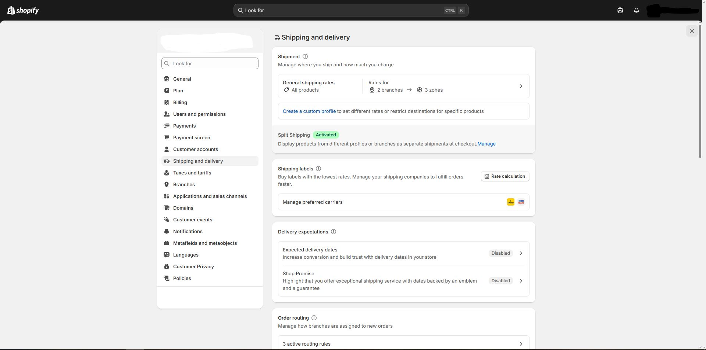
Settings → Shipping and delivery: profiles, zones, rates, packages, pickup and local delivery. -
Taxes & duties (Settings → Taxes and duties)
In Settings → Taxes and duties you define your tax regions, registrations (VAT ID, etc.), calculation rules, and if you sell internationally, the collection of duties and import taxes at checkout. Shopify helps calculate, but doesn’t file or pay taxes for you unless you enable specific Shopify Tax flows. Tax guide.
1) Set up tax regions & registrations
- Go to Taxes and duties and add your countries/regions where you charge tax. Then add your tax numbers (when applicable). You can edit registrations, exemptions and overrides on the same page. Set up taxes · Manage registrations.
- EU (VAT): review whether OSS/IOSS applies and the €10,000 threshold for micro-businesses. EU tax reference.
2) Prices including/excluding tax
- Enable “Include tax in product prices” if you work with VAT-inclusive RRPs (common in the EU). Include/exclude taxes in prices.
- To have displayed prices adapt by country (included or excluded as appropriate), enable tax-inclusive pricing adjustments together with Markets. Dynamic tax-inclusive pricing.
3) Calculation accuracy: product categories/tax codes
Assign product categories (or tax codes) to improve calculation accuracy without maintaining manual overrides. If you have overrides that conflict with the category, the override prevails. Product categories.
4) Duties & import taxes (international sales)
- Enable collection at checkout from Taxes and duties → Duties and import taxes. Review compatibility before enabling. Guide to duties & import taxes · Enable collection at checkout.
- You need to complete per product the HS code and country of origin for correct calculations (without them, Shopify infers by description/category). Data requirements.
- Important: collecting duties/import taxes at checkout can override manual tax overrides/rates while active; review checkout customizations and tax settings. Considerations & compatibility.
Note: Shopify helps you calculate taxes, but it does not replace tax advice nor file returns for you (except specific Shopify Tax flows). Consult your advisor or local tax authority. Scope of support.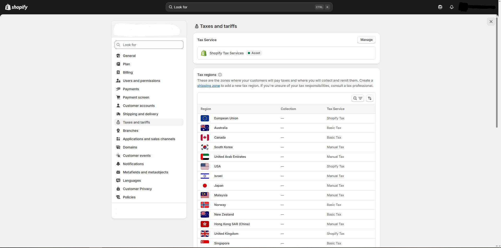
Settings → Taxes and duties: regions, registrations, tax-inclusive prices, product categories and duties at checkout. -
Locations (Settings → Locations)
A location is any physical place or app where you sell, store inventory, or fulfill/ship orders. You can have multiple and the maximum depends on your plan. What a location is & limits by plan.
1) Create & configure a location
- Go to Settings → Locations and click Add location.
- Complete Name and Address. Decide if “inventory at this location is available for online orders”.
- (Optional) Make it default if it will be your main fulfillment origin.
2) Inventory per location
- Assign stock by product and location (from the product or with the bulk editor).
- Multi-location management lets you combine own stock with logistics/dropshipping apps.
3) Order routing/fulfillment priority
Set order routing rules to decide from which location to ship (priorities, proximity, stock, etc.). As a tiebreaker, add “Ship from the nearest location”.
4) Local pickup & local delivery (per location)
- Enable Local pickup for each location offering pickup.
- Configure Local delivery with distance radius or postal codes per location.
5) POS & device location
In stores with POS, assign each device to its location and manage the POS subscription per location.
6) Shipping profiles & location groups
In Shipping profiles, locations are grouped to calculate rates. Inactive locations appear as Inactive and aren’t used at checkout until activated.
7) Deactivate or delete a location
- Before deactivating, complete and/or reassign all associated orders and transfers.
- You can’t deactivate the default location (change it first) nor a third-party/private app location (remove the app).
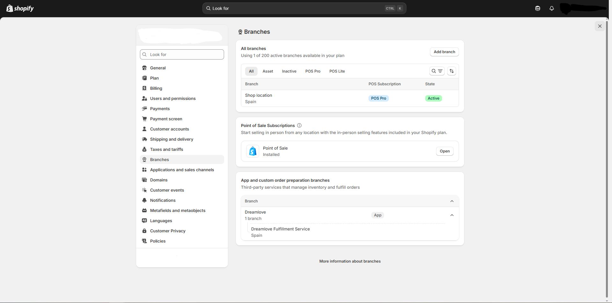
Settings → Locations: setup/management, inventory by location, routing rules and local options. -
Apps & sales channels (Settings → Apps and sales channels)
From this section you install and manage apps that add functionality to your store (marketing, shipping, analytics…), and sales channels such as Shop, Google & YouTube, Facebook & Instagram or marketplaces. Everything is centralized in the Admin.
1) Install apps
- Shopify App Store: find the app and click Install; authorize permissions in the Admin.
- Third-party link: install private/custom apps with their installation URL.
- After installing, you’ll see it in Settings → Apps and sales channels (open its page for preferences, permissions and app billing).
2) Manage apps, permissions & billing
- From each app page you can open it, review permissions and privacy policy, adjust its preferences, and check its billing or plan.
- If the app adds dashboard blocks, you can enable them from the Admin itself or the theme editor (see point 4).
3) Uninstall apps
- In Settings → Apps and sales channels, open the app menu → Uninstall.
- If the app had inventory in an app location, follow the guided flow to remove/transfer stock before deleting it.
4) App blocks in the theme (App blocks / App embeds)
- With Online Store 2.0 themes you can add app blocks or app embeds from Online store → Customize (category “Apps”).
- Use them to insert widgets (reviews, badges, forms, etc.) without editing theme code.
5) Add sales channels
- Go to Settings → Apps and sales channels and click Visit Shopify App Store.
- Search the channel (e.g., Shop, Google & YouTube, Facebook & Instagram) and click Add channel.
- Each channel adds its own dashboard with metrics and settings.
6) Product & collection availability
- When adding a channel, by default your products become available to that channel; you can exclude items from the product page (Sales channels → Manage).
- Collections availability is managed from Products → Collections (doesn’t change each product’s individual availability).
7) Quick examples
- Shop (native channel): set up the channel and customize your shop in the Shop app; to appear, products must have image, price and category.
- Google & YouTube: sync catalog, list free on Shopping and run campaigns.
- Facebook & Instagram: sync catalog and enable social shopping.
- Marketplaces (Marketplace Connect): connect Amazon/eBay and manage listings from the app.
Tips:- Install only what you need; each app adds scripts and may impact performance.
- Review permissions, charges, and policy of each app before installing.
- Audit apps and channels periodically; uninstall those you don’t use.
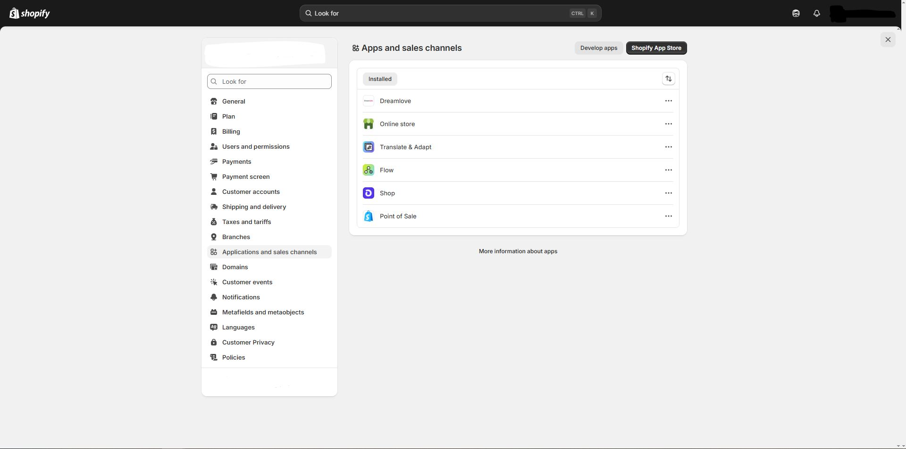
Settings → Apps & sales channels: installation, management and availability by channel. -
Domains (Settings → Domains)
From Settings → Domains you can use a custom domain for your store, manage it, and set which one will be the primary domain your customers see.
- Buy domain on Shopify: guided process and management from the panel itself. How to buy a domain on Shopify.
- Connect external domain (GoDaddy, IONOS, Cloudflare, etc.):
- Automatic connection (GoDaddy/IONOS/Cloudflare): Connect automatically.
- Manual connection (edit DNS at your provider): Connect manually.
- General guide and compatibility: Connect an external domain.
- Transfer domain to Shopify (move domain management to Shopify): Transfer domain to Shopify.
- Choose primary domain (what customers will see): Change primary domain.
- Automatic SSL/TLS (HTTPS security): free certificates for domains added to Shopify; issuance may take up to 48 h. Secure connections (TLS/SSL). Troubleshooting.
- Ongoing management: subdomains, auto-renewal, DNS editing, aliases/redirects. Manage domains.

Settings → Domains: Domain management in Shopify. -
Customer events (Settings → Customer events)
In Settings → Customer events you manage pixels that log visitor actions (page view, product view, add to cart, begin checkout, purchase, etc.). You can review app pixels (installed by apps/channels) and add custom pixels to send data to your analytics/ads tools while complying with customer privacy. Pixels & events guide.
1) Privacy & consent
- Set up the cookie banner and preferences in Settings → Customer privacy (policy, banner and opt-out). Integrate your CMP if you use one.
- If you work with Google (GCM v2), use the Customer Privacy API or a custom pixel to pass consent to Google.
2) Install & manage pixels
- App pixels: added by apps/channels (Facebook, Google, etc.). Review them under “App pixels” and check their permissions.
- Custom pixels: click Add custom pixel, paste your script, define data permissions and save. Use for GTM, own measurement, etc.
3) Available standard events
page_viewed,collection_viewed,product_viewed,search_submittedproduct_added_to_cart,product_removed_from_cartcheckout_started,payment_info_submitted,purchase(and others in checkout/order status)
4) Test & debug
- Use the Shopify Pixel Helper from the admin itself (pixel “Test” button) to see real-time events.
- Also check the browser console/network or the provider’s helper (e.g., GA4 DebugView).
5) Security & best practices
- Pixels run in a controlled environment that provides better security and data control.
- Avoid unnecessary scripts; document what data you send and under which legal consent basis.
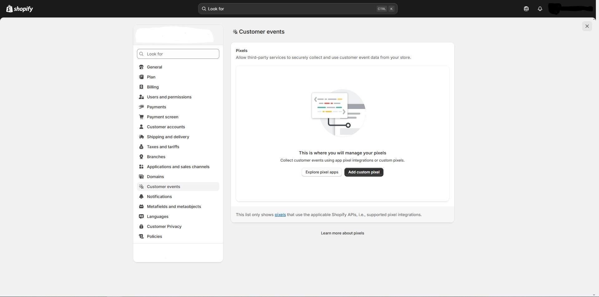
Settings → Customer events: pixel management, consent and testing. -
Notifications (Settings → Notifications)
From Settings → Notifications you manage the alerts sent to customers (by email and SMS) and to your team (new order, etc.). Templates come ready to use and you can customize them with your logo, colors, and content. Store notifications.
1) Main types
- Customers: order confirmation, shipping updates and tracking, delivery, refund, ready for pickup in store, etc. (email/SMS depending on customer details).
- Team (staff): notifies new order to the emails you choose.
2) Add recipients (team) for “New order”
- Go to Settings → Notifications → Staff notifications.
- Under Recipients, click Add recipient and enter the email to notify.
3) SMS for customers
If the customer provides a phone number instead of an email and your business address is in a supported country, they’ll receive the confirmation by SMS (Spain, USA, UK, Germany, Italy, France, Canada, Australia, Japan, Ireland, Brazil, and New Zealand, among others). SMS in Shopify.
4) Customize templates (logo, colors, HTML/Liquid)
- At the top of Notifications you can apply a logo and brand color to all templates.
- Open any template (e.g., “Order confirmation”) and edit the subject and body (HTML with Liquid). You can preview and send a test.
- If you change the theme language, consider how it affects templates depending on what you modified (subject only, body only, or both). If you sell in multiple languages, customers receive notifications in their language when it’s enabled. Customize templates.
5) Available variables (Liquid)
Use Liquid variables to insert data (order, customer, shipping, etc.). See the reference to know what’s available in each notification. Notification variables.
6) Deliverability best practices
- Use a sender with your own domain and authenticate it (SPF/DKIM) to reduce spam/bounces (configured in Notifications/Sender email and domain authentication).
- Keep HTML light and include alt text for images.
7) Notes on Inbox and other channels
For Shopify Inbox (chat) messages, enable desktop/mobile/email notifications from its own panel. Inbox notifications.
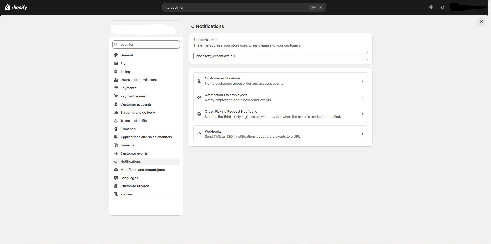
Settings → Notifications: template customization, SMS, and team alerts. -
Metafields and Metaobjects (Settings → Custom data)
Metafields add fields to existing resources (products, variants, collections, customers, orders, etc.) and metaobjects let you create new, reusable content types (e.g., size guides, specifications, brand profiles) that you then connect to your store. Metafields · Metaobjects.
1) Create metafield definitions
- Go to Settings → Custom data and choose the resource (Product, Collection, Customer, Order…).
- Click Add definition, name the Namespace.key, choose the type (text, number, color, file, reference, list…) and, if applicable, validations.
- Save the definition and then add the value from the resource page (product, collection, etc.).
2) Display metafields in the store
- With OS 2.0 themes, connect metafields as dynamic sources from the theme editor (sections/blocks → database icon → choose your metafield).
- You can also use them in Liquid if your section doesn’t support dynamic sources.
3) Create a metaobject (reusable structured content)
- In Settings → Custom data → Metaobjects create a definition (e.g., “Size guide”) with its fields (rich text, image, table, etc.).
- Create entries of that metaobject (each size/brand/collection can have its own record).
- Optional: in “Product” create a metaobject reference metafield to link the proper entry to each product.
- Show it in the store by connecting the reference as a dynamic source or via Liquid.
4) Useful cases
- Product category attributes: add size, material, color, etc., with standardized category metafields.
- Technical specs/Manual: per-product metafields or a “Spec sheet” metaobject.
- Collection-specific FAQs: “FAQ” metaobject + reference from the collection.
- Brand profiles: metaobject with logo, description, and images and a listing page.
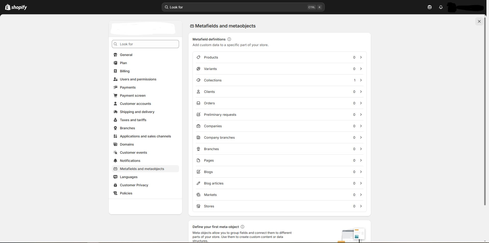
Settings → Metafields and metaobjects: Custom data for metafields (definitions/values) and metaobjects (definitions/entries) connected to theme sections. -
Languages (Settings → Languages · Markets → Languages and domains)
Shopify lets you sell in multiple languages. First, add and publish languages from Settings → Languages. Then, in Settings → Markets, you can assign languages per market (and change the default language if you use subfolders or international domains). Localization & translation overview · Manage languages.
1) Add and publish languages
- Go to Settings → Languages and click Add language. When ready, Publish it so it’s visible in the store.
- Optional: in Settings → Markets → (your market) → Languages and domains add/remove languages for that market or change its default language (requires configured subfolders or domains).
2) Translate content
- Use the official Translate & Adapt app to translate products, collections, pages, blogs, policies, and more. It allows automatic translation and manual editing per language/market.
- You can also translate the theme (UI strings) from the theme language editor or with CSV.
3) Checkout and language
The checkout is translated from Settings → Checkout → Checkout language (Manage) and is shown in the customer’s active language if it’s published.
4) Language selector and recommendations
- Enable the language selector in your theme (header or footer) so customers can switch languages.
- The Geolocation app by Shopify can recommend a language based on location/browser preferences.
5) International SEO (URLs and
hreflang)- With subfolders or domains per market/language, Shopify automatically generates
hreflangtags and includes them in the sitemap to help search engines.
6) Best practices
- Publish only languages with complete translations (avoid “mixes”).
- Centralize translations in Translate & Adapt and sync after product/theme changes.
- If you sell via Markets, use subfolders or domains and verify the language selector works across all templates.

Settings → Languages: add/publish, translations (theme and content), selector, and international SEO. -
Customer privacy (Settings → Customer privacy)
In Settings → Customer privacy you configure your privacy policy, the cookie banner, the opt-out of data sharing page, and region controls. It’s the central panel to comply with regulations and reflect user consent preferences across the store. Set customer privacy.
1) Cookie banner and legal pages
- Enable the cookie banner and link your Privacy policy. If operating across regions, adjust behavior by country/market.
- Enable (if applicable) the opt-out page for “sale/sharing” of data for legal frameworks that require it.
2) Consent and privacy APIs
Shopify exposes the Customer Privacy API (storefront) and Checkout APIs so your banner/CMP can set and read consent (marketing/analytics/preferences), affecting pixels, audiences, and checkout.
3) Google Consent Mode v2 (optional)
If you use Google Ads/GA4, implement Consent Mode v2 via your CMP or a custom pixel and propagate consent signals to Google.
4) GDPR/CCPA: customer data requests
- Access/portability: from Customers, open the profile and export/deliver the requested data.
- Deletion/redaction: Customers → profile → More actions → Delete personal data. Shopify redacts personal data and keeps non-personal data (line items, amounts) for accounting; if there are pre-authorized payments/subscriptions, read the notices before deleting.
- You must contact third parties you shared data with outside Shopify.
5) Apps and redactions (webhooks)
When you process a request, apps with data access receive data request/redact webhooks so they also delete/deliver data; review documentation if you use integrations.
6) Best practices
- Publish clear policies (privacy/cookies) and limit scripts to what’s necessary.
- Centralize consent with your CMP or the native banner and test it across browsing/checkout.
- Audit apps and their data access periodically.
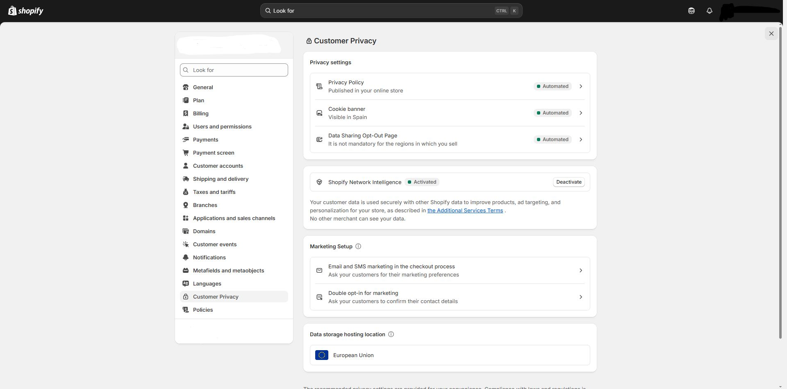
Settings → Customer privacy: cookie banner, regional controls, and consent propagation to pixels/checkout. -
Policies (Settings → Policies)
In Settings → Policies you can create or generate your store’s legal pages: Refund policy, Privacy policy, Terms of service, Shipping policy, Legal notice, and if you use subscriptions, Subscription policy. Shopify provides templates; review and adapt them to your business before publishing. Add store policies.
1) Create/edit your policies
- Go to Settings → Policies.
- Under “Written policies”, choose the policy you want to complete.
- Write your text or click Insert template and edit it with the rich text editor (you can add links and images).
- Save to publish.
2) Suggested content by policy (practical summary)
- Refunds: timeframe, item condition, exclusions (“final sale”), who pays return shipping, restocking fee if applicable, process steps.
- Privacy: what data you collect, legal basis/consent, sharing with third parties, user rights (access/deletion), DPO/support contact.
- Terms: purchase conditions, prices/taxes, limitations, intellectual property, jurisdiction.
- Shipping: zones, estimated times, rates, carriers, incidents and customs.
- Legal notice: company details (legal name, tax address, VAT ID, contact), especially useful in the EU.
- Subscriptions (if applicable): billing cycle, cancellation, partial refunds, renewals.
3) Return rules (automate your policy)
In addition to the legal text, define Return rules (timeframe, cost of return shipping, restocking fee, and “final sale” exceptions). You can enable self-service returns so the customer can request a return from their account and see the refund estimate according to your rules. Set up return rules and policy.
4) Where they appear and how to link them
- When added, Shopify automatically links them in the checkout footer and, depending on the theme, on product pages (shipping policy) and order review (returns).
- You can also add them to the footer/header menu from Content → Menus.
- Direct links:
/policies/refund-policy,/policies/privacy-policy,/policies/terms-of-service,/policies/shipping-policy,/policies/subscription-policy.
5) Language and automatic privacy updates
Some templates can be generated in English and in certain cases in French, Italian, and Spanish. In addition, Shopify offers automated privacy settings (cookie banner, opt-out) that can keep your store aligned when you change certain settings. Languages and automated privacy.
6) Compliance (EU and other frameworks)
Verify with your legal advisor that your policies comply with local regulations (e.g., GDPR in the EU) and that your cookie/consent banner is properly configured. GDPR in Shopify.
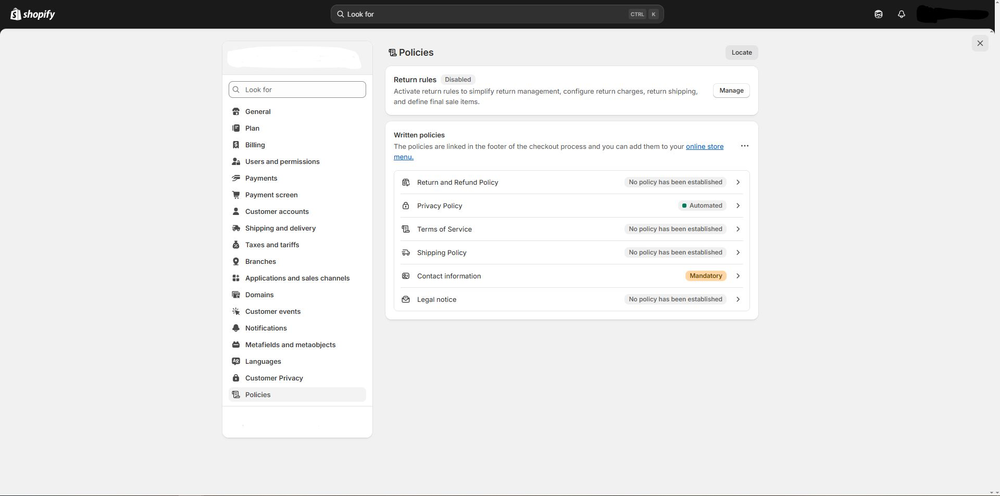
Settings → Policies: legal text + return rules; linked in checkout and you can add them to menus. -
Contact & Technical Support
To dive deeper into Shopify topics, refer to the relevant documentation and associated resources.